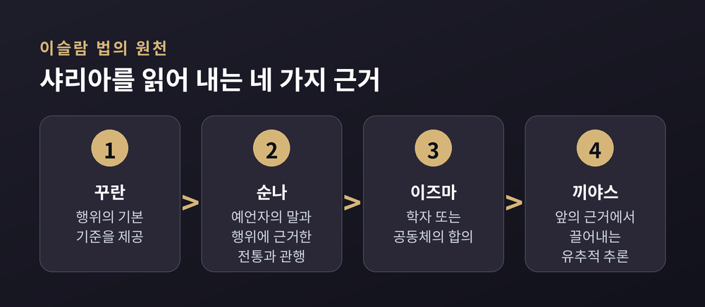

이번 글에서는 세계 종교의 계명과 윤리 규범을 나란히 놓고 살펴보겠습니다. 십계명, 오계, 샤리아는 모두 "이렇게 살아라"라고 말합니다. 그런데 그 말의 뿌리가 저마다 다릅니다. 어느 쪽이 옳은지를 가리려는 글이 아니라, 구조가 왜 달라졌는지를 종교학의 시선으로 정리해 보려는 글입니다.
계명을 비교할 때 가장 먼저 물어야 할 것은 목록이 아닙니다. 그 목록을 떠받치는 근거입니다.
크게 네 갈래로 나눠 볼 수 있습니다.
첫째, 인격적인 신의 의지에서 권위가 나오는 경우입니다. 유대교, 기독교, 이슬람이 여기에 가깝습니다. 브리태니커는 샤리아를 "무슬림에 대한 신의 명령의 표현"이라고 정의합니다.
둘째, 우주의 짜임 자체가 규범인 경우입니다. 힌두교의 리타와 다르마가 그렇습니다. 명령하는 이가 앞에 오지 않습니다.
셋째, 목표에 이르기 위한 훈련 도구인 경우입니다. 불교의 계(戒)가 대표적입니다.
넷째, 관계와 역할이 규범의 단위가 되는 경우입니다. 유교의 오륜이 이 결에 놓입니다.
물론 이 분류는 이해를 돕는 도구일 뿐입니다. 실제 전통들은 여러 성격을 겹쳐 갖습니다.
십계명은 출애굽기 20장과 신명기 5장, 두 곳에 나옵니다. 유대 전통에서는 이를 "열 가지 말씀"이라 부릅니다.
다만 유대교에서 십계명은 전체가 아닙니다. 토라에서 추출된 계명의 총수는 613개로 헤아려집니다. 12세기의 마이모니데스가 기록하고 분류한 613 계명이 유대 율법의 기초를 이룹니다.
구성이 흥미롭습니다. 긍정 계명이 248개, 부정 계명이 365개입니다. 전통적으로 365는 태양력의 날 수와, 248은 인체의 지체 수와 대응한다고 설명해 왔습니다.
현실적인 한계도 있습니다. 613 가운데 상당수는 예루살렘 성전과 관련된 규정입니다. 제1성전은 기원전 6세기에, 제2성전은 기원후 1세기에 파괴되었습니다. 그래서 오늘날 실제로 수행할 수 없는 항목이 적지 않습니다.
여기서 할라카라는 말이 등장합니다. 히브리어 어근 '할라크', 곧 "걷다"에서 온 단어입니다. 문자 그대로 "사람이 걷는 방식"을 뜻합니다. 성서 시대 이래 종교 의례와 일상 품행을 규율하며 발전해 온 법과 규례의 총체를 가리킵니다.
주목할 점은 이 체계가 텍스트 하나로 굴러가지 않는다는 것입니다. 성문 토라 위에 구전 토라라는 해석 전통이 얹혀 있습니다. 그 전승은 기원후 200년경 미슈나로 기록되었고, 500년경 게마라로 확장되어 탈무드를 이루었습니다.
유대교에는 인류 전체를 향한 규범도 있습니다. 탈무드 산헤드린 56a에 나오는 노아 계명 일곱 가지입니다. 사법 제도 수립, 신성모독 금지, 우상숭배 금지, 부도덕한 성관계 금지, 살인 금지, 도둑질 금지, 살아 있는 짐승의 살을 먹지 않을 것. 613은 유대인의 특수 의무로, 7은 보편 의무로 나뉘어 있는 셈입니다.
십계명을 두고 흔히 하는 오해가 하나 있습니다. "몇 번째 계명"이라는 말이 어디서나 통할 것이라는 생각입니다.
실제로는 끊어 세는 방식이 세 갈래입니다.
유대 전통은 "나는 너를 이집트 땅에서 이끌어 낸 주 너의 하느님이다"라는 선언을 첫 번째 말씀으로 셉니다. 가톨릭과 루터교 전통은 아우구스티누스가 대중화한 방식을 따라 하느님이 1인칭으로 말하는 부분 전체를 첫 계명으로 묶고, 대신 마지막 탐욕 금지를 둘로 나눕니다. 동방정교와 개혁교회, 성공회 전통은 다른 신 금지와 새긴 우상 금지를 별개의 두 계명으로 봅니다.
결과가 갈립니다. 간음 금지가 가톨릭 목록에서는 여섯째지만, 유대교와 대다수 개신교에서는 일곱째입니다.
같은 본문인데 분절이 다릅니다. 무엇을 강조하느냐가 세는 방식에 그대로 반영된 것입니다.
기독교는 유대교의 율법을 물려받되, 그것을 어떻게 읽을지를 두고 긴 논의를 이어 왔습니다.
마태복음 22장에서 예수는 가장 큰 계명을 묻는 질문에 두 가지로 답합니다. 마음과 목숨과 뜻을 다해 하느님을 사랑하라는 것, 그리고 이웃을 네 몸같이 사랑하라는 것입니다. "이 두 계명에 온 율법과 예언서가 달려 있다"는 말이 뒤따릅니다. 바울도 갈라디아서에서 온 율법이 이웃 사랑 한마디로 완성된다고 말합니다.
그렇다면 구약의 수많은 규정은 어떻게 되는가. 이 물음에 답하기 위해 나온 것이 율법의 삼분법입니다. 토마스 아퀴나스는 구약 율법을 도덕적·의식적·재판적 규정으로 나누는 입장을 정립했습니다. 칼뱅은 이 삼분법을 받아들였고, 루터도 비슷한 틀로 율법을 이해했습니다.
이 구분에 따르면 그리스도 이후 신자에게 직접 관계되는 것은 도덕법이며, 그것이 십계명에 가장 뚜렷이 드러난다고 보았습니다.
용도에 대한 정리도 뒤따랐습니다. 개혁자들은 도덕법의 세 가지 용도를 말했습니다. 자기 의로움에 절망하게 해 회개로 이끄는 용도, 사회의 악과 불의를 억제하는 용도, 신자의 삶을 인도하는 용도입니다.
다만 강조점은 갈렸습니다. 루터는 억제와 죄 자각이라는 두 기능을 앞세웠고, 칼뱅은 세 번째 용도를 특히 중시했습니다. 이 차이는 지금도 개신교 안에서 논의가 이어지는 지점입니다.
한 가지 덧붙이자면, 삼분법이 성경 본문에 명시적으로 나타난 구분인지에 대해서도 신학 내부에 이견이 있습니다. 정리된 합의라기보다 오래 쌓인 해석의 전통으로 보는 편이 정확합니다.
불교의 오계는 목록만 보면 십계명과 닮은 데가 있습니다. 살생하지 않음, 주지 않은 것을 갖지 않음, 삿된 음행 금지, 거짓말 금지, 취하게 하는 것 금지입니다.
그런데 성격이 다릅니다. 오계는 명령이 아니라 훈련 규칙입니다. 재가 불자가 그 유익함을 이해하고 자발적으로, 스스로의 발의로 받아 지키는 지침입니다.
규범의 출발점에 명령자가 아니라 수행자가 서 있습니다. 이것이 유일신 전통과 갈라지는 결정적 지점입니다.
계는 홀로 서 있지도 않습니다. 실라는 "도덕 또는 바른 행위"로 정의되며, 계·정·혜 삼학 가운데 하나입니다. 팔정도에서는 바른 말, 바른 행위, 바른 생계 세 항목이 여기에 해당합니다. 오계는 이 세 측면에 속합니다.
출가자의 규정은 훨씬 촘촘합니다. 상좌부 전통의 빠띠목카는 비구 227계, 비구니 311계로 이루어집니다. 승가에서 추방되는 네 가지 중대 범계, 열세 가지 중한 범계, 그리고 나머지 경범과 미세한 규칙들로 짜여 있습니다.
형성 과정도 눈여겨볼 만합니다. 이 규칙들은 처음부터 완성된 목록으로 주어지지 않았습니다. 필요가 생길 때마다 하나씩 제정되었습니다. 위에서 일괄로 내려온 법전이 아니라, 공동체가 문제를 겪으며 쌓아 올린 사례집에 가깝습니다.
샤리아는 흔히 "이슬람법"으로 옮겨집니다. 어원적으로는 "길"이라는 뜻을 품고 있습니다. 히브리어 할라카가 "걷는 길"이었다는 점과 겹쳐 보면 흥미롭습니다.
브리태니커는 샤리아를 이슬람의 근본적 종교 개념이자 그 법으로 정의합니다. 무슬림에 대한 신의 명령의 표현으로 이해되며, 적용에서는 모든 무슬림에게 부과되는 의무 체계를 구성한다는 설명입니다.
여기서 반드시 구분해야 할 개념이 하나 있습니다. 판결을 도출하고 해석하는 법학 활동은 피끄흐라 부릅니다. 피끄흐는 샤리아에 대한 인간의 이해와 실천입니다. 신의 법과 그에 대한 인간의 해석을 같은 것으로 취급하면 논의가 어긋납니다.
법의 원천은 네 가지로 정리됩니다. 꾸란, 순나, 이즈마, 끼야스입니다.

신앙 실천의 뼈대는 다섯 기둥입니다. 신앙 고백인 샤하다, 하루 다섯 번의 기도인 살라트, 순자산의 2.5%를 내는 자카트, 라마단 단식인 사움, 평생 한 번의 메카 순례인 하지입니다. 하지는 신체적·재정적 어려움이 없는 경우에 해당합니다.
또 하나 눈에 띄는 것은 행위를 판정하는 방식입니다. 이슬람 법학은 인간의 모든 행위를 다섯 등급으로 나눕니다. 순니와 시아 양쪽 법학파가 모두 이 틀을 인정합니다.
허용과 금지의 이분법이 아닙니다. 권장과 비선호, 그리고 순수한 선택의 영역이 명시적으로 자리 잡고 있습니다. 규범을 스펙트럼으로 본 셈입니다.
목적을 묻는 논의도 일찍부터 있었습니다. 마까시드 알샤리아는 법의 상위 의도를 다루는 이론입니다. 생명, 이성, 종교, 재산, 혈통의 보전이 다섯 필수 요소로 꼽힙니다. 14세기의 알샤티비는 명시적 명령을 존중해야 한다고 분명히 말하면서도, 문자에 대한 준수가 텍스트의 목적을 소외시킬 만큼 경직되어서는 안 된다고 경고했습니다.
힌두 전통의 출발점은 명령이 아닙니다. 리타입니다.
리타는 베다에 나오는 우주 질서를 가리킵니다. 우주의 물리적 질서이자, 제사의 질서이자, 세계의 도덕법입니다. 리타 때문에 해와 달이 매일의 여정을 밟고 계절이 규칙적으로 운행한다고 설명합니다.
물리 법칙과 도덕법이 한 단어 안에 들어 있습니다. 이 개념이 뒤에 다르마와 카르마 교리로 이어졌습니다.
다르마는 층위가 있습니다. 모두에게 공통된 다르마를 사다라나 다르마라 부릅니다. 진실함, 비폭력, 청정, 자비, 자기 절제처럼 지위나 역할과 무관하게 적용되는 원리입니다. 반면 자리에 따라 달라지는 다르마도 있습니다. 『마누스므리티』는 다르마를 개인의 의무, 영원한 영적 길, 보편적 도덕 행위의 세 유형으로 서술합니다.
다만 바르나슈라마 다르마는 네 바르나의 세습 질서를 전제합니다. 이 체계를 어떻게 평가할지는 현대 힌두 사상 안에서도 견해가 갈립니다. 사회적 위계의 정당화로 비판하는 입장과, 본래 기능적 분업 개념이었다고 보는 입장이 함께 존재합니다. 이 글에서는 어느 쪽을 판정하지 않겠습니다.
실천 윤리로 내려오면 야마와 니야마가 있습니다. 파탄잘리의 『요가수트라』에서 야마는 팔지 요가의 첫 번째 가지입니다. 비폭력, 진실, 불투도, 금욕, 무소유의 다섯 가지가 여기 속합니다. 니야마는 두 번째 가지로, 지켜야 할 덕스러운 습관과 준수 사항입니다.
구조가 단정합니다. 야마는 "하지 말 것", 니야마는 "할 것"입니다. 유대교의 부정 계명과 긍정 계명이 짝을 이루던 방식과 닮았습니다.
유교의 오륜은 계명 목록과 결이 다릅니다. 임금과 신하, 아버지와 아들, 남편과 아내, 형과 아우, 벗과 벗. 다섯 가지 관계가 윤리의 뼈대입니다.
각 관계는 상호적 책임을 규정합니다. 윗사람은 돌봄과 인도를, 아랫사람은 존중과 지지를 집니다. 한쪽만 역할을 수행하면 체계가 무너집니다.
이를 움직이는 것이 인(仁)입니다. 인간 공동체의 번영을 위해 모범적 인간이 보이는 태도와 행동을 가리킵니다. 오상으로 넓히면 인, 의, 예, 지, 신 다섯 덕목이 됩니다.
인이 관계 안에 있을 때, 그 관계에서 수행되는 의무는 형식이 아니라 실제 돌봄의 표현이 됩니다.
물음이 다릅니다. "무엇을 하지 말아야 하는가"가 아니라 "이 자리에서 어떤 사람이 되어야 하는가"를 묻습니다.
비교종교를 이야기할 때 가장 자주 인용되는 것이 황금률입니다. 도덕적 상호성의 원리는 거의 모든 주요 전통에서 발견됩니다. 13개 신앙 전통의 황금률 판본을 담은 포스터가 UN에 상설 전시되어 있을 정도입니다.
그런데 자세히 보면 형태가 둘로 갈립니다.
공자는 평생의 지침이 될 한 글자를 묻는 질문에 서(恕), 곧 상호성을 들었습니다. "내가 남에게 당하고 싶지 않은 일을 남에게 하지 말라"는 말이 따라붙습니다. 힐렐도 개종을 원하는 이에게 비슷하게 답했습니다. 네게 미운 것을 이웃에게 행하지 말라, 그것이 토라의 전부이고 나머지는 주석이라고 말입니다.
반면 산상수훈에 두드러진 형태는 적극형입니다. 남에게 대접받고자 하는 대로 남을 대접하라는 것입니다.
이 차이는 생각보다 큽니다. 소극형은 충족하기가 상대적으로 쉽습니다. 해를 끼치지 않는 것이, 타인의 복지를 체계적으로 돌보는 것보다 대체로 수월하기 때문입니다. 적극형은 능동적인 선행을 요구합니다.
그러니 "모든 종교가 결국 같은 말을 한다"는 결론으로 서둘러 뛰지 않는 편이 좋겠습니다. 형식도, 적용 범위도, 근거도 서로 다릅니다.
마지막으로 짚어 둘 것이 있습니다. 문자적 해석과 상황적 해석의 다툼은 어느 한 종교의 문제가 아닙니다.
유대교는 성문 토라 위에 구전 토라를 두었습니다. 해석은 예외가 아니라 기본값이었습니다. 기독교의 삼분법 논쟁은 어느 규정을 계속 적용할지를 조정하는 내부 장치였습니다. 이슬람은 샤리아와 피끄흐를 구분해 해석의 여지를 제도적으로 인정했고, 알샤티비는 경직성 자체가 입법자의 목적에 어긋난다고 보았습니다. 불교의 계율은 애초에 사례별로 쌓였습니다. 힌두 전통은 보편 규범과 자리에 따른 규범을 나란히 두었습니다.
예전에는 종교 규범을 "고정된 명령문"으로 여기는 시각이 흔했습니다. 지금은 어느 전통에서도 텍스트와 해석이 늘 함께 움직였다는 점이 더 잘 알려져 있습니다.
그렇다고 해석이 무제한인 것도 아닙니다. 모든 전통이 나름의 제동 장치를 두었습니다. 긴장은 해소되지 않고 계속됩니다.
정리하면 이렇습니다.
계명의 목록만 늘어놓고 비교하면 닮은 점만 보입니다. 살인하지 말라, 훔치지 말라, 거짓말하지 말라. 어디에나 있습니다.
차이는 그 아래에 있습니다. 누가 말했는가, 왜 지켜야 하는가, 지키지 않으면 무엇이 어긋나는가. 이 물음에 대한 답이 다르기에 구조가 달라졌습니다.
"규범은 목록이 아니라 세계관의 그림자입니다."
세계 종교의 계명을 비교하는 일이 서로를 재는 저울이 될 수 있겠냐고 물으신다면, 저는 그렇지 않다고 답하겠습니다. 다만 각자가 세계를 어떻게 보고 있었는지를 비추는 거울로는 충분하다고 생각합니다.